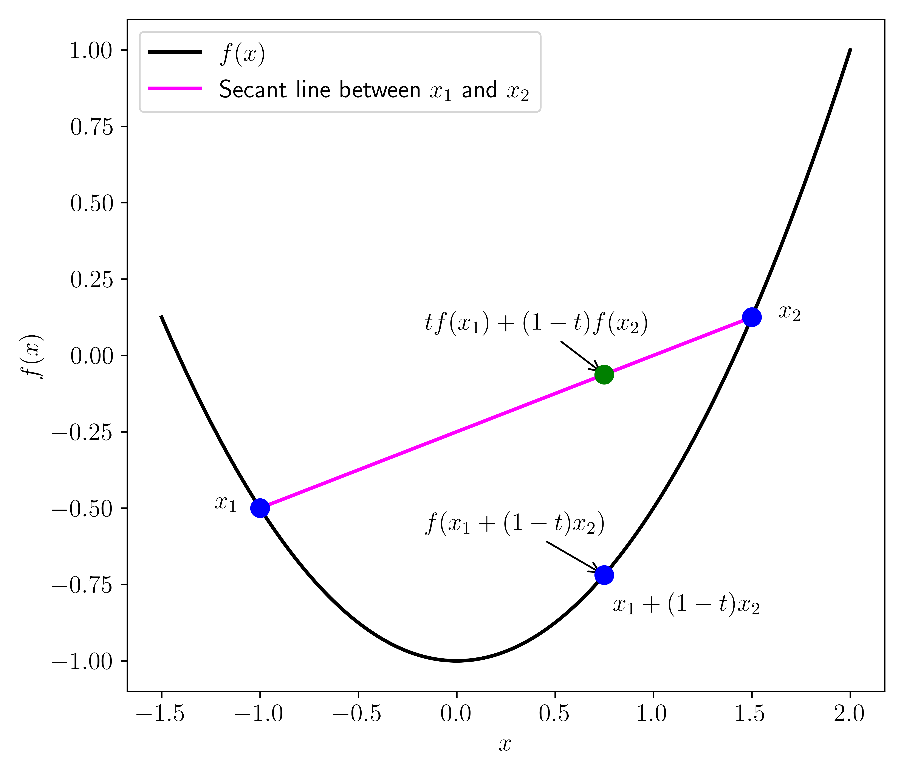
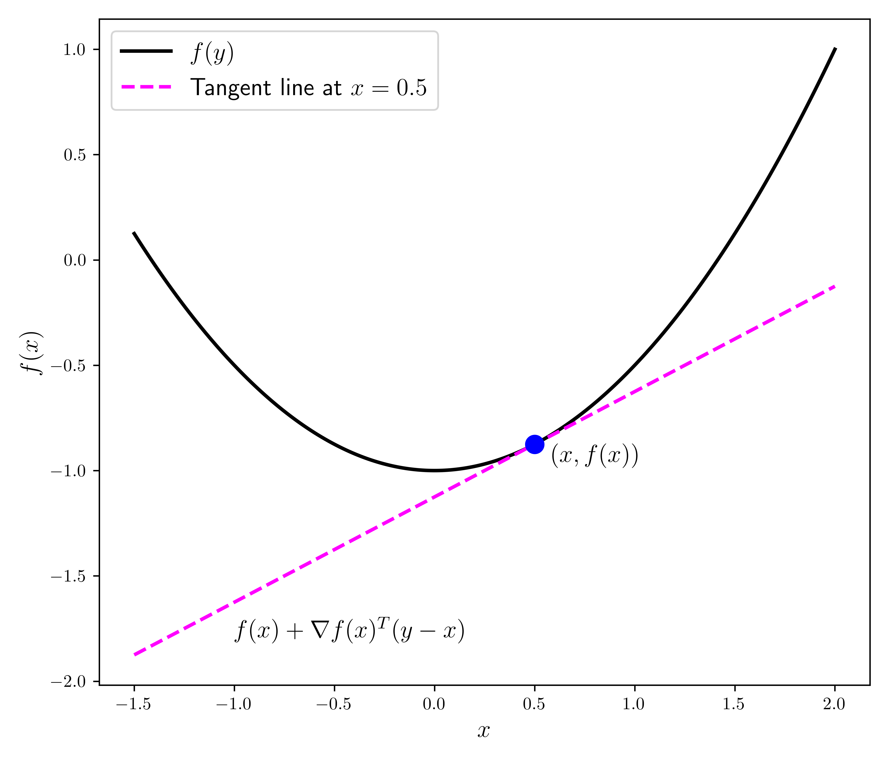

\(\newcommand{\bmu}{\boldsymbol{\mu}}\) \(\newcommand{\bSigma}{\boldsymbol{\Sigma}}\) \(\newcommand{\bfbeta}{\boldsymbol{\beta}}\) \(\newcommand{\bflambda}{\boldsymbol{\lambda}}\) \(\newcommand{\bgamma}{\boldsymbol{\gamma}}\) \(\newcommand{\bsigma}{{\boldsymbol{\sigma}}}\) \(\newcommand{\bpi}{\boldsymbol{\pi}}\) \(\newcommand{\btheta}{{\boldsymbol{\theta}}}\) \(\newcommand{\bphi}{\boldsymbol{\phi}}\) \(\newcommand{\balpha}{\boldsymbol{\alpha}}\) \(\newcommand{\blambda}{\boldsymbol{\lambda}}\) \(\renewcommand{\P}{\mathbb{P}}\) \(\newcommand{\E}{\mathbb{E}}\) \(\newcommand{\indep}{\perp\!\!\!\perp} \newcommand{\bx}{\mathbf{x}}\) \(\newcommand{\bp}{\mathbf{p}}\) \(\renewcommand{\bx}{\mathbf{x}}\) \(\newcommand{\bX}{\mathbf{X}}\) \(\newcommand{\by}{\mathbf{y}}\) \(\newcommand{\bY}{\mathbf{Y}}\) \(\newcommand{\bz}{\mathbf{z}}\) \(\newcommand{\bZ}{\mathbf{Z}}\) \(\newcommand{\bw}{\mathbf{w}}\) \(\newcommand{\bW}{\mathbf{W}}\) \(\newcommand{\bv}{\mathbf{v}}\) \(\newcommand{\bV}{\mathbf{V}}\) \(\newcommand{\bfg}{\mathbf{g}}\) \(\newcommand{\bfh}{\mathbf{h}}\) \(\newcommand{\horz}{\rule[.5ex]{2.5ex}{0.5pt}}\) \(\renewcommand{\S}{\mathcal{S}}\) \(\newcommand{\X}{\mathcal{X}}\) \(\newcommand{\var}{\mathrm{Var}}\) \(\newcommand{\pa}{\mathrm{pa}}\) \(\newcommand{\Z}{\mathcal{Z}}\) \(\newcommand{\bh}{\mathbf{h}}\) \(\newcommand{\bb}{\mathbf{b}}\) \(\newcommand{\bc}{\mathbf{c}}\) \(\newcommand{\cE}{\mathcal{E}}\) \(\newcommand{\cP}{\mathcal{P}}\) \(\newcommand{\bbeta}{\boldsymbol{\beta}}\) \(\newcommand{\bLambda}{\boldsymbol{\Lambda}}\) \(\newcommand{\cov}{\mathrm{Cov}}\) \(\newcommand{\bfk}{\mathbf{k}}\) \(\newcommand{\idx}[1]{}\) \(\newcommand{\xdi}{}\)
3.4. Convexity#
Our optimality conditions have only concerned local minimizers. Indeed, in the absence of global structure, local information such as gradients and Hessians can only inform us about the immediate neighborhood of points. Here we introduce convexity, a commonly encountered condition under which local minimizers become global minimizers.
3.4.1. Definitions#
Convex sets We start with convex sets.
DEFINITION (Convex Set) \(\idx{convex set}\xdi\) A set \(D \subseteq \mathbb{R}^d\) is convex if for all \(\mathbf{x}, \mathbf{y} \in D\) and all \(\alpha \in (0,1)\)
\(\natural\)
Note that, as \(\alpha\) goes from \(0\) to \(1\),
traces a line joining \(\mathbf{x}\) and \(\mathbf{y}\). In words, a set is convex if all segments between pairs of points in the set also lie in it.
KNOWLEDGE CHECK: Is a banana a convex set? \(\checkmark\)
EXAMPLE: An open ball in \(\mathbb{R}^d\) is convex. Indeed, let \(\delta > 0\) and \(\mathbf{x}_0 \in \mathbb{R}^d\). For any \(\mathbf{x}, \mathbf{y} \in B_{\delta}(\mathbf{x}_0)\) and any \(\alpha \in [0,1]\), we have
where we used the triangle inequality on the second line. Hence we have established that \((1-\alpha) \mathbf{x} + \alpha \mathbf{y} \in B_{\delta}(\mathbf{x}_0)\).
One remark. All we used in this argument is that the Euclidean norm is homogeneous and satisfies the triangle inequality. That is true of every norm. So we conclude that an open ball under any norm is convex. Also, the open nature of the set played no role. The same holds for closed balls in any norm. \(\lhd\)
EXAMPLE: Here is an important generalization. Think of the space of \(n \times n\) symmetric matrices
as a linear subspace of \(\mathbb{R}^{n^2}\) (how?). The dimension of \(\mathbf{S}^n\) is \({n \choose 2} + n\), the number of free parameters under the symmetry assumption. Consider now the set of all positive semidefinite matrices in \(\mathbf{S}^n\)
(Observe that \(\mathbf{S}_+^n\) is not the same as the set of symmetric matrices with nonnegative elements.)
We claim that the set \(\mathbf{S}_+^n\) is convex. Indeed let \(X, Y \in \mathbf{S}_+^n\) and \(\alpha \in [0,1]\). Then by postive semidefiniteness of \(X\) and \(Y\), for any \(\mathbf{v} \in \mathbb{R}^n\)
This shows that \((1-\alpha) X + \alpha Y \succeq \mathbf{0}\) and hence that \(\mathbf{S}_+^n\) is convex. \(\lhd\)
A number of operations preserve convexity. In an abuse of notation, we think of a pair of vectors \((\mathbf{x}_1, \mathbf{x}_2) \in \mathbb{R}^d \times \mathbb{R}^{f}\) as a vector in \(\mathbb{R}^{d+f}\). Put differently, \((\mathbf{x}_1, \mathbf{x}_2)\) is the vertical concatenation of column vectors \(\mathbf{x}_1\) and \(\mathbf{x}_2\). This is not to be confused with \(\begin{pmatrix}\mathbf{x}_1 & \mathbf{x}_2\end{pmatrix}\) which is the \(d \times 2\) matrix with columns \(\mathbf{x}_1\) and \(\mathbf{x}_2\) – provided \(f = d\) (otherwise it is not a well-defined matrix).
LEMMA (Operations that Preserve Convexity) \(\idx{operations that preserve convexity}\xdi\) Let \(S_1, S_2 \subseteq \mathbb{R}^d\), \(S_3 \subseteq \mathbb{R}^{f}\), and \(S_4 \subseteq \mathbb{R}^{d+f}\) be convex sets. Let \(\beta \in \mathbb{R}\) and \(\mathbf{b} \in \mathbb{R}^d\). The following sets are also convex:
a) Scaling: \(\beta S_1 = \{\beta \mathbf{x}\,:\, \mathbf{x} \in S_1\}\)
b) Translation: \(S_1 + \mathbf{b} = \{\mathbf{x} + \mathbf{b}\,:\, \mathbf{x} \in S_1\}\)
c) Sum: \(S_1 + S_2 = \{\mathbf{x}_1 + \mathbf{x}_2\,:\, \mathbf{x}_1 \in S_1 \text{ and } \mathbf{x}_2 \in S_2\}\)
d) Cartesian product: \(S_1 \times S_3 = \{(\mathbf{x}_1, \mathbf{x}_2) \,:\, \mathbf{x}_1 \in S_1 \text{ and } \mathbf{x}_2 \in S_3\}\)
e) Projection: \(T = \{\mathbf{x}_1\,:\, (\mathbf{x}_1, \mathbf{x}_2) \in S_4 \text{ for some }\mathbf{x}_2 \in \mathbb{R}^f\}\)
f) Intersection: \(S_1 \cap S_2\)
\(\flat\)
Proof: We only prove f). The other statements are left as an exercise. Suppose \(\mathbf{x}, \mathbf{y} \in S_1 \cap S_2\) and \(\alpha \in [0,1]\). Then, by the convexity of \(S_1\), \((1-\alpha) \mathbf{x} + \alpha \mathbf{y} \in S_1\) and, by the convexity of \(S_2\), \((1-\alpha) \mathbf{x} + \alpha \mathbf{y} \in S_2\). Hence
This property can be extended to an intersection of an arbitrary number of convex sets. \(\square\)
Convex functions Our main interest is in convex functions.
Here is the definition.
DEFINITION (Convex Function) \(\idx{convex function}\xdi\) A function \(f : \mathbb{R}^d \to \mathbb{R}\) is convex if, for all \(\mathbf{x}, \mathbf{y} \in \mathbb{R}^d\) and all \(\alpha \in (0,1)\)
More generally, a function \(f : D \to \mathbb{R}\) with a convex domain \(D \subseteq \mathbb{R}^d\) is said to be convex over \(D\) if the definition above holds over all \(\mathbf{x}, \mathbf{y} \in D\). A function is said to be strictly convex\(\idx{stricltly convex function}\xdi\) if a strict inequality holds. If \(-f\) is convex (respectively, strictly convex), then \(f\) is said to be concave\(\idx{concave function}\xdi\) (respectively, strictly concave). \(\natural\)
The definition above is sometimes referred to as the secant line definition.

LEMMA (Affine Functions are Convex) \(\idx{affine functions are convex lemma}\xdi\) Let \(\mathbf{w} \in \mathbb{R}^d\) and \(b \in \mathbb{R}\). The function \(f(\mathbf{x}) = \mathbf{w}^T \mathbf{x} + b\) is convex. \(\flat\)
Proof: For any \(\mathbf{x}, \mathbf{y} \in \mathbb{R}^d\) and \(\alpha \in [0,1]\),
which proves the claim. \(\square\)
Here is a less straightforward example. A concrete application is given below.
LEMMA (Infimum over a Convex Set) \(\idx{infimum over a convex set lemma}\xdi\) Let \(f : \mathbb{R}^{d+f} \to \mathbb{R}\) be a convex function and let \(C \subseteq \mathbb{R}^{f}\) be a convex set. The function
is convex provided \(g(\mathbf{x}) > -\infty\) for all \(\mathbf{x} \in \mathbb{R}^d\). \(\flat\)
Proof: Let \(\mathbf{x}_1, \mathbf{x}_2 \in \mathbb{R}^d\) and \(\alpha \in [0,1]\). For \(i=1,2\), by definition of \(g\), for any \(\epsilon > 0\) there is \(\mathbf{y}_i \in C\) such that \(f(\mathbf{x}_i, \mathbf{y}_i) \leq g(\mathbf{x}_i) + \epsilon\).
By the convexity of \(C\), \(\alpha \mathbf{y}_1 + (1- \alpha)\mathbf{y}_2 \in C\). So because \(g\) is an infimum over points \(\mathbf{y}\) in \(C\), we have
where we used the convexity of \(f\) on the second line. Because \(\epsilon > 0\) is arbitrary, the claim follows. \(\square\)
EXAMPLE: (Distance to a Convex Set) Let \(C\) be a convex set in \(\mathbb{R}^d\). We show that the distance to \(C\)
is convex.
To apply the Infinimum over a Convex Set Lemma, we first need to show that \(f(\mathbf{x},\mathbf{y}) := \|\mathbf{x} - \mathbf{y}\|_2\) is convex as a function of \((\mathbf{x}, \mathbf{y})\). Let \(\mathbf{x}_1, \mathbf{x}_2 \in \mathbb{R}^d\), \(\mathbf{y}_1, \mathbf{y}_2 \in C\), and \(\alpha \in [0,1]\). We want to show that \(f\) evaluated at the convex combination
is upper bounded by the same convex combination of the values of \(f\) at \((\mathbf{x}_1,\mathbf{y}_1)\) and \((\mathbf{x}_2,\mathbf{y}_2)\).
By the triangle inequality and the absolute homogeneity of the norm,
It remains to show that \(g(\mathbf{x}) > -\infty\) for all \(\mathbf{x}\). But this is immediate since \(\|\mathbf{x} - \mathbf{y}\|_2 \geq 0\). Hence the previous lemma gives the claim. \(\lhd\)
Conditions based on the gradient and Hessian A common way to prove that a function is convex is to look at its Hessian (or second derivative in the single-variable case). We start with a first-order characterization of convexity.
Throughout, when we say that a function \(f : D \to \mathbb{R}\) is continuously differentiable, we implicitly assume that \(D\) is open or that \(D\) is contained in an open set where \(f\) is continuously differentiable. Same for twice continuously differentiable.
LEMMA (First-Order Convexity Condition) \(\idx{first-order convexity condition}\xdi\) Let \(f : D \to \mathbb{R}\) be continuously differentiable, where \(D \subseteq \mathbb{R}^d\) is convex. Then \(f\) is convex over \(D\) if and only if
\(\flat\)
On the right-hand side above, you should recognize the linear approximation to \(f\) at \(\mathbf{x}\) from Taylor’s Theorem without the remainder.

Proof: (First-Order Convexity Condition) Suppose first that \(f(\mathbf{z}_2) \geq f(\mathbf{z}_1) + \nabla f(\mathbf{z}_1)^T (\mathbf{z}_2-\mathbf{z}_1)\) for all \(\mathbf{z}_1, \mathbf{z}_2 \in D\). For any \(\mathbf{x}, \mathbf{y} \in D\) and \(\alpha \in [0,1]\), let \(\mathbf{w} = (1-\alpha) \mathbf{x} + \alpha \mathbf{y}\) (which is in \(D\) by convexity). Then taking \(\mathbf{z}_1 = \mathbf{w}\) and \(\mathbf{z}_2 = \mathbf{x}\) gives
and taking \(\mathbf{z}_1 = \mathbf{w}\) and \(\mathbf{z}_2 = \mathbf{y}\) gives
Multiplying the first inequality by \((1-\alpha)\) and the second one by \(\alpha\), and adding them up gives
proving convexity.
For the other direction, assume that \(f\) is convex over \(D\). For any \(\mathbf{x}, \mathbf{y} \in D\) and \(\alpha \in (0,1)\), by the Mean Value Theorem, for some \(\xi_\alpha \in (0,1)\) it holds that
while convexity implies
Combining, rearranging and dividing by \(\alpha\) gives
Taking \(\alpha \to 0\) gives the claim. \(\square\)
We move on to second-order conditions. We start with the case \(D = \mathbb{R}^d\).
LEMMA (Second-Order Convexity Condition) \(\idx{second-order convexity condition}\xdi\) Let \(f : \mathbb{R}^d \to \mathbb{R}\) be twice continuously differentiable. Then \(f\) is convex (over \(\mathbb{R}^d\)) if and only if \(H_f(\mathbf{x})\) is positive semidefinite for all \(\mathbf{x} \in \mathbb{R}^d\). \(\flat\)
Proof: Suppose first that \(H_f(\mathbf{z}_1) \succeq 0\) for all \(\mathbf{z}_1\). For any \(\mathbf{x}, \mathbf{y}\), by Taylor, there is \(\xi \in (0,1)\) such that
where we used the positive semidefiniteness of the Hessian. By the First-Order Convexity Condition, it implies that \(f\) is convex.
For the other direction, assume that \(f\) is convex. For any \(\mathbf{x}, \mathbf{w}\) and \(\alpha \in (0,1)\), by Taylor again, for some \(\xi_\alpha \in (0,1)\) it holds that
while the First-Order Convexity Condition implies
Combining, rearranging and dividing by \(\alpha^2\) gives
Taking \(\alpha \to 0\) and using the continuity of the Hessian shows that \(\mathbf{w}^T H_f(\mathbf{x}) \,\mathbf{w} \geq 0\). Since \(\mathbf{w}\) is arbitrary, this implies that the Hessian is positive semidefinite at \(\mathbf{x}\). This holds for any \(\mathbf{x}\), which proves the claim. \(\square\)
EXAMPLE: Consider the quadratic function
where \(P\) is a symmetric matrix. We showed previously that the Hessian is
So \(f\) is convex if and only if the matrix \(P\) is positive semidefinite. \(\lhd\)
In the more general case over a convex set, we have the following statement. The proof is essentially unchanged.
LEMMA (Second-Order Convexity Condition) \(\idx{second-order convexity condition}\xdi\) Let \(f : D \to \mathbb{R}\) be twice continuously differentiable, wherere \(D \subseteq \mathbb{R}^d\) is convex. If \(H_f(\mathbf{x})\) is positive semidefinite (respectively positive definite) for all \(\mathbf{x} \in D\), then \(f\) is convex (respectively strictly convex) over D. \(\flat\)
The following example shows what can go wrong in the other direction.
EXAMPLE: Consider the function
on the convex set
On \(D\), the function reduces to \(x_1^2\) which is convex. The Hessian is
which is not positive semidefinite (why?). \(\lhd\)
3.4.2. Convexity and unconstrained optimization#
Now comes the key property of convex functions (at least as far as we are concerned).
Global minimization in the convex case In the convex case, global minimization reduces to local minimization.
THEOREM (Global Minimizers of a Convex Function) \(\idx{global minimizers of a convex function theorem}\xdi\) Let \(f : D \to \mathbb{R}\) be a convex function, where \(D \subseteq \mathbb{R}^d\) is convex. Then any local minimizer of \(f\) over \(D\) is also a global minimizer over \(D\). \(\sharp\)
Proof: By contradiction, suppose \(\mathbf{x}_0\) is a local minimizer, but not a global minimizer. Then there is \(\mathbf{y} \in D\) such that
By convexity of \(f\) and \(D\), for any \(\alpha \in (0,1)\)
But that implies that every open ball around \(\mathbf{x}_0\) contains a point taking a smaller value than \(f(\mathbf{x}_0)\), a contradiction. \(\square\)
When \(f\) is strictly convex, the global minimizer is unique (if it exists). (Why?)
For our purposes, we will need a uniform version of strict convexity known as strong convexity which we define in the next subsection.
In the continuously differentiable case over \(\mathbb{R}^d\), we get in addition that a vanishing gradient at \(\mathbf{x}_0\) is now a sufficient condition for \(\mathbf{x}_0\) to be a local – and therefore global – minimizer.
THEOREM (First-Order Optimality Condition for Unconstrained Convex Functions) \(\idx{first-order optimality condition for unconstrained convex functions}\xdi\) Let \(f : \mathbb{R}^d \to \mathbb{R}\) be a continuously differentiable, convex function. Then \(\mathbf{x}_0\) is a local minimizer – and therefore a global minimizer – if and only if \(\nabla f(\mathbf{x}_0) = \mathbf{0}\) . \(\sharp\)
Proof: Assume \(\nabla f(\mathbf{x}_0) = \mathbf{0}\). By the First-Order Convexity Condition, for any \(\mathbf{y}\)
So \(\mathbf{x}_0\) is a global minimizer.
The other direction follows immediately from the First-Order Necessary Optimality Condition. \(\square\)
EXAMPLE: (Quadratic Function) Consider the quadratic function
where \(P\) is symmetric and positive semidefinite. The Hessian is then
for any \(\mathbf{x}\). So \(f\) is convex. Further the gradient is
for all \(\mathbf{x}\).
Any \(\mathbf{x}\) satisfying
is a global minimizer. \(\lhd\)
More generally, we have the following.
THEOREM (First-Order Optimality Condition for Convex Functions on Convex Sets) \(\idx{first-order optimality condition for convex functions on convex sets}\xdi\) Let \(f : D \to \mathbb{R}\) be a continuously differentiable, convex function, where \(D \subseteq \mathbb{R}^d\) is convex. Then \(\mathbf{x}_0\) is a local minimizer – and therefore a global minimizer – if and only if for any \(\mathbf{y} \in D\)
\(\sharp\)
Proof idea: Put differently the condition above says that, in any direction \(\mathbf{v}\) of the form \(\mathbf{y} - \mathbf{x}_0\) for some \(\mathbf{y} \in D\), the directional derivative \(\frac{\partial f(\mathbf{x}_0)}{\partial \mathbf{v}}\) is nonnegative. Indeed, otherwise \(\mathbf{v}\) would be a descent direction and we could find points in \(D\) arbitrarily close to \(\mathbf{x}_0\) taking a smaller \(f\) value.
Proof: Assume the condition holds. By the First-Order Convexity Condition, for any \(\mathbf{y} \in D\)
So \(\mathbf{x}_0\) is a global minimizer.
For the other direction, assume that there is \(\mathbf{y} \in D\) such that
For any \(\alpha \in (0,1)\), by the Mean Value Theorem, for some \(\xi_\alpha \in (0,1)\) it holds that
By continuity of the gradient, for \(\alpha\) small enough, we have by the assumption above that
Plugging this back above, it follows that for all such \(\alpha\)
contradicting the fact that \(\mathbf{x}_0\) is a local minimizer. \(\square\)
EXAMPLE: Consider the function \(f(x) = \frac{1}{2} x^2\) for \(x \in D = \{x : x \geq 1\}\). The function \(f\) is convex for any \(x\) since \(f''(x) = 1 > 0\).
Over \(D\), the global minimizer is \(x^* = 1\), yet the derivative is \(f'(1) = 1 \neq 0\). Indeed, because \(x^*\) is on the boundary of the domain \(D\), it does not matter that the function decreases when moving to the left from \(x^*\). We only care about directions that take us into the domain \(D\), in this case the right direction at \(x^*\).
The condition in the theorem reads
This is equivalent to \(f'(1) \geq 0\), which is indeed satisfied here.
If \(x > 1\), then the condition is
Taking \(y = x+ 1\), we get \(f'(x) \geq 0\) while taking \(y = \frac{1}{2} (1 + x)\) gives \(f'(x) \frac{1}{2}(1-x) \geq 0\) which implies \(f'(x) \leq 0\) (Why?). Combining the two gives \(f'(x) = 0\). No \(x > 1\) satisfies this condition. \(\lhd\)
Strong convexity With stronger assumptions, we obtain stronger guarantees. One such assumption is strong convexity, which we define next in the special case of twice continuously differentiable functions. It generalizes the single-variable condition of requiring that the second derivative \(f''(x) > m > 0\) for all \(x \in \mathbb{R}\). Specifically we require that the second derivative “in every direction” is bounded from below. For this purpose, we use the second directional derivative.
A strongly convex function is one where the second directional derivative along all unit vector directions is uniformly bounded below away from \(0\). That is, there is \(m > 0\) such that
for all \(\mathbf{x} \in \mathbb{R}^d\) and all unit vectors \(\mathbf{v} \in \mathbb{R}^d\).
We will use the following notation to state it formally. Let \(A, B \in \mathbb{R}^{d \times d}\) be symmetric matrices. Recall that \(A \succeq 0\) means that \(A\) is positive semidefinite. We write \(A \preceq B\) (respectively \(A \succeq B\)) to indicate that \(B - A \succeq 0\) (respectively \(A - B \succeq 0\)). A different, useful way to put this is the following. Recall that \(B - A \succeq 0\) means \(\mathbf{z}^T B\mathbf{z} - \mathbf{z}^T A\mathbf{z} \geq 0\) for all \(\mathbf{z} \in \mathbb{R}^{d}\). Hence, rearranging,
Similarly,
DEFINITION (Strongly Convex Function) \(\idx{strongly convex function}\xdi\) Let \(f : \mathbb{R}^d \to \mathbb{R}\) be twice continuously differentiable and let \(m > 0\). We say that \(f\) is \(m\)-strongly convex if
\(\natural\)
By the observation above, noting that \(\mathbf{z}^T I\mathbf{z} = \|\mathbf{z}\|^2\), we get that the condition above is equivalent to
In particular, for a unit vector \(\mathbf{v}\) we get \(\mathbf{v}^T H_f(\mathbf{x}) \,\mathbf{v} \geq m\). Vice versa, if \(\mathbf{v}^T H_f(\mathbf{x}) \,\mathbf{v} \geq m\) for all \(\mathbf{x} \in \mathbb{R}^d\) and all unit vectors \(\mathbf{v} \in \mathbb{R}^d\), then it holds that for any nonzero vector \(\mathbf{z} \in \mathbb{R}^d\)
which after rearranging gives \(\mathbf{z}^T H_f(\mathbf{x}) \,\mathbf{z} \geq m \|\mathbf{z}\|^2\).
Combined with Taylor’s Theorem, this gives immediately the following. The proof is left as an exercise.
LEMMA (Quadratic Bound for Strongly Convex Functions) \(\idx{quadratic bound for strongly convex functions}\xdi\) Let \(f : \mathbb{R}^d \to \mathbb{R}\) be twice continuously differentiable. Then \(f\) is \(m\)-strongly convex if and only if
\(\flat\)
The previous lemma immediately leads to the following fundamental result.
THEOREM (Global Minimizer of a Strongly Convex Function) \(\idx{global minimizer of a strongly convex function theorem}\xdi\) Let \(f : \mathbb{R}^d \to \mathbb{R}\) be twice continuously differentiable and \(m\)-strongly convex with \(m>0\). If \(\nabla f(\mathbf{x}^*) = \mathbf{0}\), then \(\mathbf{x}^*\) is a unique global minimizer of \(f\). \(\sharp\)
Proof: If \(\nabla f(\mathbf{x}^*) = \mathbf{0}\), by the Quadratic Bound for Strongly Convex Functions,
for all \(\mathbf{y} \neq \mathbf{x}^*\), which proves the claim. \(\square\)
EXAMPLE: (Quadratic Function, continued) Consider again the quadratic function
where \(P\) is symmetric and, this time, positive definite. Again, for any \(\mathbf{x}\), the Hessian is
The expression \(\mathbf{v}^T P \,\mathbf{v}\), viewed as a function of \(\mathbf{v}\) is continuous, it attains its minimum on \(\mathbb{S}^{d-1}\) by the Extreme Value Theorem. By our assumption that \(P\) is positive definite, that minimum must be strictly positive, say \(\mu > 0\). Then \(f\) is \(\mu\)-strongly convex. The Global Minimizer of a Strongly Convex Function Theorem then indicates that there is a unique global minimizer to the least-squares objective in that case. Using a previous calculation, it is obtained by computing \(\mathbf{x}^* = - P^{-1} \mathbf{q}\). (Why is \(P\) invertible?) \(\lhd\)
EXAMPLE: Consider the least-squares objective function
where \(A \in \mathbb{R}^{n \times d}\) has full column rank and \(\mathbf{b} \in \mathbb{R}^n\). This objective function can be rewritten as a quadratic function
where \(P = 2 A^T A\) is symmetric, \(\mathbf{q} = - 2 A^T \mathbf{b}\), and \(r= \mathbf{b}^T \mathbf{b} = \|\mathbf{b}\|^2\).
The Hessian of \(f\) is
This Hessian is positive definite. Indeed we have proved previously that, for any \(\mathbf{z} \in \mathbb{R}^d\),
since \(A \mathbf{z} = \mathbf{0}\) implies \(\mathbf{z} = \mathbf{0}\) by the full column rank assumption.
By the previous example, \(f\) is \(\mu\)-strongly convex for some \(\mu > 0\). The Global Minimizer of a Strongly Convex Function Theorem then indicates that there is a unique global minimizer to the least-squares objective in that case. \(\lhd\)
EXAMPLE: Let \(D \subseteq \mathbb{R}^d\) be a nonempty, closed, convex set. For \(\mathbf{x}\in\mathbb{R}^d\) we define the projection of \(\mathbf{x}\) onto \(D\) as
Let \(\mathbf{w} \in D\). By the Extreme Value Theorem applied to \(\|\mathbf{x} - \mathbf{z}\|\) on the closed, bonded set \(\{\mathbf{z} \in D: \|\mathbf{x} - \mathbf{z}\| \leq \|\mathbf{x} - \mathbf{w}\|\}\), there is a global minimizer for this problem. Moreover, the problem is equivalent to minimizing the squared norm \(\|\mathbf{x} - \mathbf{z}\|^2\) which is strongly convex as a function of \(\mathbf{z}\) since
As a result, the minimizer is unique.
We use the First-Order Optimality Conditions for Convex Functions on Convex Sets to characterize it. The gradient of \(\|\mathbf{x} - \mathbf{z}\|^2\) as a function of \(\mathbf{z}\) is \(2\mathbf{z} - 2 \mathbf{x}\) by our previous formula for quadratic functions. So the optimality condition reads (after simplifying the factor of \(2\))
This formula generlizes the Orthogonal Projection Theorem beyond the case of linear subspaces. \(\lhd\)
KNOWLEDGE CHECK: Recover the geometric characterization of the orthogonal projection onto a linear subspace from the previous example. \(\checkmark\)
Self-assessment quiz (with help from Claude, Gemini, and ChatGPT)
1 Which of the following is NOT an operation that preserves the convexity of sets?
a) Scaling a convex set by a real number.
b) Translating a convex set by a vector.
c) Taking the union of two convex sets.
d) Taking the intersection of two convex sets.
2 Let \(f : \mathbb{R}^d \to \mathbb{R}\) be twice continuously differentiable. Which of the following conditions is sufficient for \(f\) to be convex?
a) \(\nabla^2 f(x) \prec 0\), for all \(x \in \mathbb{R}^d\)
b) \(\nabla^2 f(x) \preceq 0\), for all \(x \in \mathbb{R}^d\)
c) \(\nabla^2 f(x) \succeq 0\), for all \(x \in \mathbb{R}^d\)
d) \(\nabla^2 f(x) \succ 0\), for all \(x \in \mathbb{R}^d\)
3 Let \(f : \mathbb{R}^d \to \mathbb{R}\) be a continuously differentiable, convex function. Which of the following is a necessary and sufficient condition for \(x_0\) to be a global minimizer of \(f\)?
a) \(\nabla f(x_0) \neq 0\)
b) \(\nabla f(x_0) = 0\)
c) \(\nabla^2 f(x_0) \succeq 0\)
d) \(\nabla^2 f(x_0) \succ 0\)
4 A function \(f : \mathbb{R}^d \to \mathbb{R}\) is \(m\)-strongly convex if:
a) \(\nabla^2 f(x) \succeq mI_{d \times d}\), for all \(x \in \mathbb{R}^d\) and some \(m > 0\)
b) \(\nabla^2 f(x) \preceq mI_{d \times d}\), for all \(x \in \mathbb{R}^d\) and some \(m > 0\)
c) \(\nabla^2 f(x) \succeq -mI_{d \times d}\), for all \(x \in \mathbb{R}^d\) and some \(m > 0\)
d) \(\nabla^2 f(x) \preceq -mI_{d \times d}\), for all \(x \in \mathbb{R}^d\) and some \(m > 0\)
5 Which of the following statements is true about the least-squares objective function \(f(x) = \|Ax - b\|_2^2\), where \(A \in \mathbb{R}^{n \times d}\) has full column rank and \(b \in \mathbb{R}^n\)?
a) \(f(x)\) is convex but not necessarily strongly convex.
b) \(f(x)\) is strongly convex.
c) \(f(x)\) is convex if and only if \(b = 0\).
d) \(f(x)\) is strongly convex if and only if \(b = 0\).
Answer for 1: c. Justification: The text states that scaling, translation, addition, Cartesian product, projection, and intersection preserve convexity. It does not mention the union. In fact, the union of two convex sets is not necessarily convex (e.g., take the union of two distinct points).
Answer for 2: c. Justification: The text states the second-order convexity condition: if \(f : \mathbb{R}^d \to \mathbb{R}\) is twice continuously differentiable, then \(f\) is convex if and only if \(\nabla^2 f(x) \succeq 0\), for all \(x \in \mathbb{R}^d\).
Answer for 3: b. Justification: The text states and proves the first-order optimality condition for convex functions on \(\mathbb{R}^d\): if \(f : \mathbb{R}^d \to \mathbb{R}\) is a continuously differentiable, convex function, then \(x_0\) is a global minimizer if and only if \(\nabla f(x_0) = 0\).
Answer for 4: a. Justification: The text defines an \(m\)-strongly convex function \(f : \mathbb{R}^d \to \mathbb{R}\) as one satisfying \(\nabla^2 f(x) \succeq mI_{d \times d}\), for all \(x \in \mathbb{R}^d\) and some \(m > 0\).
Answer for 5: b. Justification: The text shows that the Hessian of the least-squares objective function is \(2A^TA\), which is positive definite when \(A\) has full column rank. Therefore, the least-squares objective function is strongly convex.